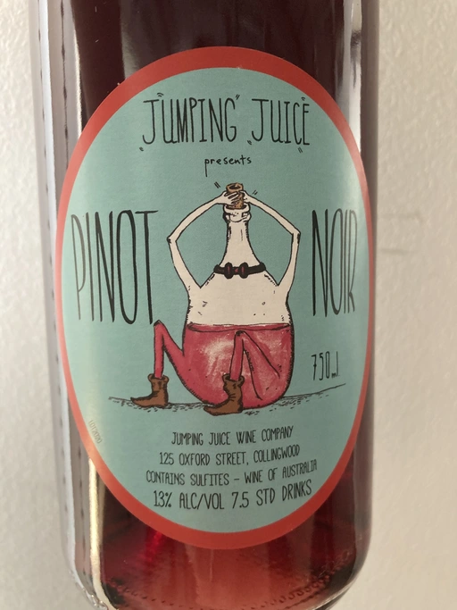

- Type
- Red Still, Dry
- Producer
- Jumping Juice
- Vintage
- 2020
- Location
- Australia
- Grapes
- Pinot Noir
- Alcohol
- 13
- Sugar
- 0.69
- Price
- 542 UAH
- Cellar
- N/A
Producer
One of the projects of Patrick Sullivan.
Ratings
2021-07-23 - 7.25
Plain and straight-forward wine. Glass full of mix of red fruits, fallen leaves and spices. Honest, well balanced, easy going and not pretentious. Ideal for summer parties.